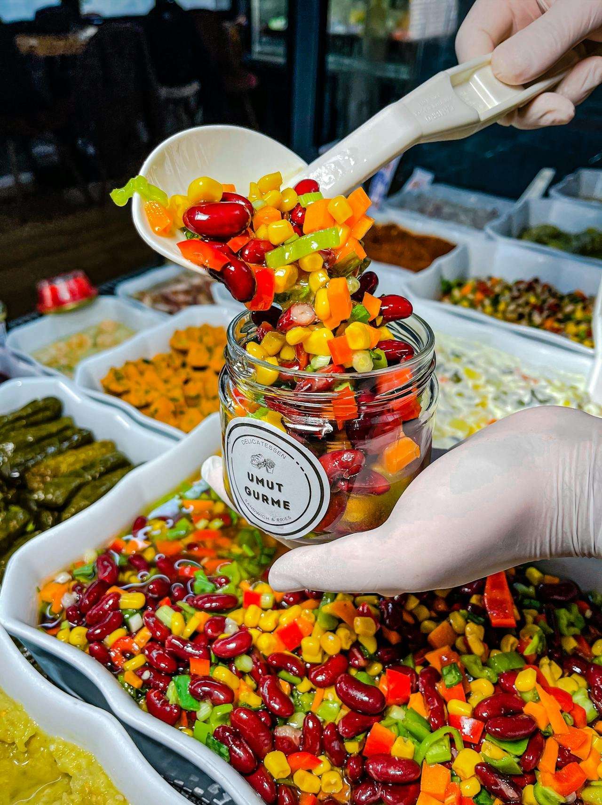

Beauty & The Bean: your skin on TikTok’s Dense Bean Salad

Smoothie bowls and avocado toast are out! There's a new kid on the block, and it's packed with more beans than you can shake a spoon at. TikTok's latest food obsession - the dense bean salad - is taking the internet by storm. This protein-packed, fiber-rich medley that's more colorful than your average influencer's feed isn't just another flash in the pan. The dense bean salad is a nutritional powerhouse that's got everyone from fitness gurus to foodies buzzing.
While beans are undoubtedly nutritional all-stars, their effects on our largest organ (yes, that's your skin!) are worth exploring. Could this trend be the secret to that coveted "glow" or might it be stirring up some unexpected skin drama? From antioxidant armies fighting free radicals to potential hormone-tweaking properties, these little legumes pack more than just a flavorful punch. So, before you dive spoon-first into this trend, let's unpack the fascinating science behind how your daily dose of dense bean salad might be writing a new chapter in your skin's story.
The Legume Lowdown: Skin Perks and Quirks
Why Your Skin Might Appreciate a Dense Bean Salad
Antioxidant Abundance: Beans are like tiny antioxidant grenades, exploding with polyphenols that fight off those pesky free radicals. Your skin cells? They're doing a happy dance. Beans are particularly known for their polyphenol properties. These compounds may help protect skin cells from damage caused by free radicals, potentially supporting overall skin health.
Protein Party: These little legumes are protein powerhouses. Protein is an essential component for skin structure and repair, contributing to the production of collagen and elastin. Hello, elasticity! Goodbye, wrinkles!
Zinc Zinger: Many types of beans contain minerals like zinc. This mineral is like a bouncer for your pores, keeping oil production in check and potentially showing acne the exit. Zinc is also known to play a role in skin health by supporting the skin's healing processes.
Fiber Friend: A happy gut often means happy skin. Beans are fiber-rich and keep your digestive system grooving, potentially leading to a clearer complexion. What can we say, the gut-skin connection is real!
Vitamin Variety: Beans contain various B vitamins, including niacin, riboflavin, and folate. B vitamins are involved in many cellular processes, including those that affect skin health. These B vitamins are skin cell regeneration rockstars, helping keep your complexion fresh and fabulous.
Bean There, Done That: Reasons to Reconsider
Digestive Discussions: Beans contain compounds like lectins and phytates, which some people may find difficult to digest. While not directly related to skin, digestive discomfort could potentially lead to stress, which might affect skin health. You can easily mitigate the chance of this happening by soaking your beans well prior to preparation/cooking as this reduces lectin content.
Hormone Havoc: Beans contain phytoestrogens, plant compounds that can have estrogen-like effects in the body. The impact of phytoestrogens on skin health can vary among individuals. If you're prone to hormonal skin issues, keep an eye out for any changes. Researches are not conclusive but have found that while phytoestrogens may have beneficial effects for some, they could potentially exacerbate hormone-sensitive skin conditions in others. The impact appears to be highly individual.
Sugar Shock: While beans themselves typically have a low glycemic index, be mindful of high-sugar dressings in bean salads. Diets high in sugar and high-glycemic foods have been associated with increased acne severity and other skin issues in some individuals.
FODMAP Awareness: Beans are high in FODMAPs (fermentable oligosaccharides, disaccharides, monosaccharides, and polyols), which can cause digestive issues for some people, particularly those with irritable bowel syndrome (IBS). For these individuals, the gut irritation from high-FODMAP foods like beans could potentially lead to skin inflammation.
The Best Bean
While most beans offer some skin health benefits, a few stand out. Check out the beans below to see which you should add to your next dense bean salad.
Black Beans: Rich in anthocyanins, powerful antioxidants that may protect skin from oxidative stress and inflammation. They also contain high levels of folate, which plays a role in skin cell regeneration.
Soybeans: Contains isoflavones, a type of phytoestrogen that may help improve skin elasticity and reduce wrinkles. Soy also provides essential amino acids necessary for collagen production.
Chickpeas: High in zinc, which aids in skin repair, sebum production, and acne reduction. Chickpeas are also a good source of vitamin B6, important for skin development and maintenance.
Lentils: Packed with vitamin C, crucial for collagen synthesis and skin elasticity. Lentils also provide iron, a mineral that supports healthy skin cell production.
Adzuki Beans: Contain high levels of polyphenols, particularly proanthocyanidins, which have been shown to improve skin hydration and elasticity.
The effects of diet on skin health can vary greatly between individuals. Your skin is as unique as you are. While beans offer many nutritional benefits, their impact on skin health may differ from person to person. If you have specific skin concerns, it's always best to consult with a healthcare professional or a registered dietitian for personalized advice. Remember, what works for one TikToker might not work for you, and that's okay! The key is finding the balance that makes both your taste buds and your skin glow with happiness.